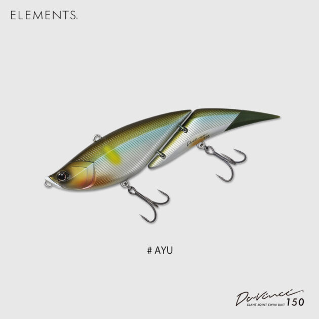
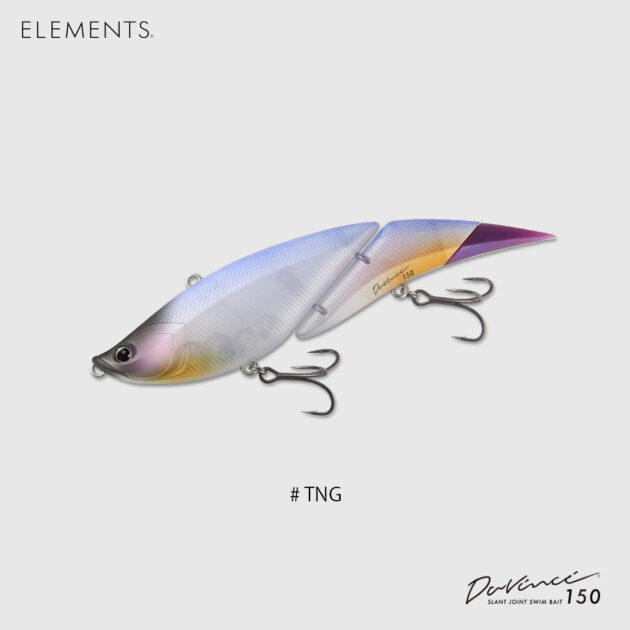
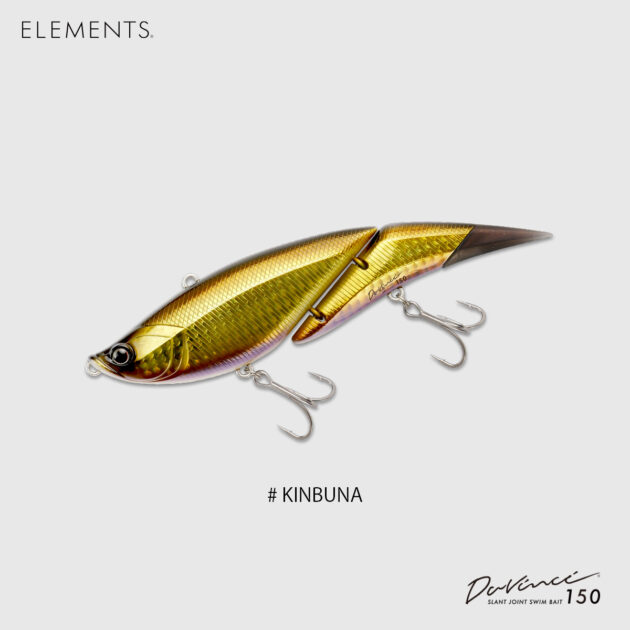
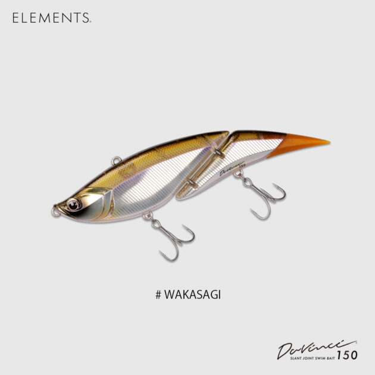
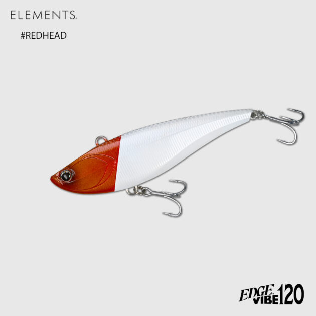

ダヴィンチ150
（Davinci 150）
ダヴィンチ150はELEMENTS（エレメンツ）のジョイントスイムベイトです。
ダヴィンチの独自の2つのアイで、「捻れるツイストロールアクション」と、レンジを攻める「潜行するバイブレーションアクション」を生み出します。150mmにダウンサイズしたことでキャストアキュラシーが上がり、ハイピッチなアクションでテンポよく魚にアプローチできます。

画像出典:ELEMENTS公式HP
スペック
- メーカー
- ELEMENTS（エレメンツ）
- タイプ
- ジョイントスイムベイト（フローティング）
- 全長
- 150mm（5.9inch）
- 自重
- 約32g（1.1oz）
- フック
- BKK fangs62 UA #3（FW/SW共通）
- リング
- #4
- ターゲット
- ブラックバス・シーバスなど
- 価格
- 4,500円（税別）
▼今すぐチェック

ダヴィンチ150の特徴
2つのアイでアクションを変えられる、“スモールダヴィンチ”
-
2つのアイで2つのアクション
独自の2つのアイで、捻れるツイストロールアクションと、レンジを攻める潜行バイブレーションアクションを使い分けられます。
-
ダウンサイズでキャストしやすい
コンパクトになったボディはキャストアキュラシーに優れ、ハイピッチなアクションでフィールドの魚にテンポよくアプローチできます。
-
ダヴィスト釣法も健在
振り子のようなアクションが生む水押しとフラッシングで、深いレンジのモンスターフィッシュを引き寄せます。
-
FWカラーとSWカラー
SWカラーは内部ウエイトはそのままに、フックとスプリットリングを変更した仕様。2024年生産分からフックはすべてUA（ウルトラアンチラスト）仕様です。
ダヴィンチ150の使い方
基本はただ巻き。どちらのアイにラインを結ぶかで、表層付近のツイストロールと、潜らせてレンジを攻めるバイブレーションを使い分けます。
まずはツイストロールで表層〜中層を探り、反応がなければアイを替えて深いレンジを引く、という順番で試すと状況をつかみやすくなります。
ダヴィンチ150の得意な状況
ビッグベイトのサイズ感で、テンポよく広く探りたいときに向いています。190や240では大きすぎる場面や、キャストの精度を上げてピンスポットに入れたいときにも扱いやすいサイズです。
ワンポイント
別売りのデルタテール（D150）に付け替えると、テールの見た目と水の受け方を変えられます（全9色）。同じボディでも雰囲気を変えたいときに試してみてください。
ダヴィンチシリーズの使い分け
| モデル | 全長／自重 | 得意な場面 |
|---|---|---|
| ベビーダヴィンチ80 | 80mm／約20〜21g | T-80（フローティング）とV-80（スローシンキング）の2タイプ |
| ダヴィンチ150 | 150mm／約32g | キャストアキュラシーとテンポのよさが魅力の中間サイズ（本記事のモデル） |
| ダヴィンチ190 | 190mm／56g | より大きなシルエットで存在感を出したいときに。全19色 |
| ダヴィンチ240 | 240mm／約113g | 大型ベイトやモンスター狙いの最大サイズ |
ダヴィンチはサイズが4つ。ベイトの大きさとタックルの強さで選ぶのが基本です。はじめての1本なら、扱いやすい150から試すのがオススメです。
人気カラー
FWカラーから、使い分けやすい4色を紹介します（カラー名は公式の画像表記のまま）。

AYUアユを意識したナチュラルカラー。アユがベイトになる河川やリザーバーに。

TNGナチュラル系のカラー。澄んだ水で見切られにくくしたいときに。

KINBUNAキンブナ系のカラー。フナがベイトになる野池や平野部の河川に。

WAKASAGIワカサギを意識したカラー。ワカサギがベイトになるリザーバーや湖に。
画像出典:ELEMENTS公式HP
ダヴィンチ150に似ているルアー
-

エッジバイブ120 ELEMENTS 詳細はこちら＞同じエレメンツのバイブレーション。ビッグベイトタックルのまま、手返しよく探り直したいときに。
-
 ソフトウェイク150F
DAIWA
詳細はこちら＞
ソフトウェイク150F
DAIWA
詳細はこちら＞
全長150mm・自重33gのソフトボディミノー。同じ150mmクラスの大きなシルエットで見せたいときに。
-
 クラッシュシティ インフィルトレイター
ラパラ
詳細はこちら＞
クラッシュシティ インフィルトレイター
ラパラ
詳細はこちら＞
ソフトスイムベイト。ハードのスイムベイトに反応しないときのフォローに。